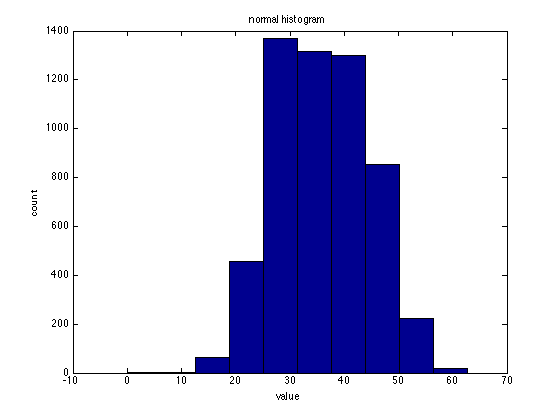
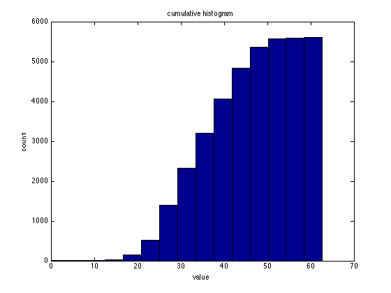
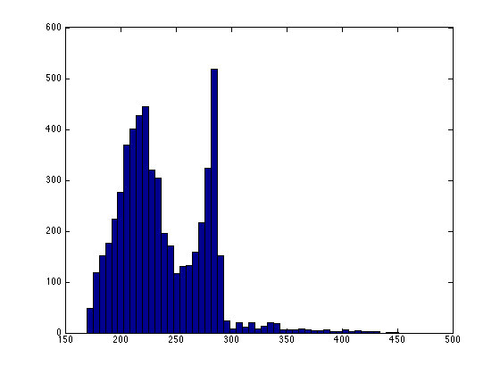
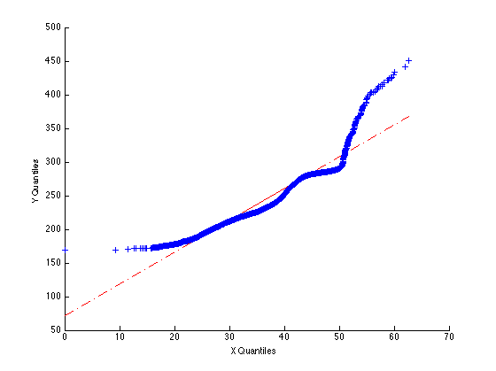
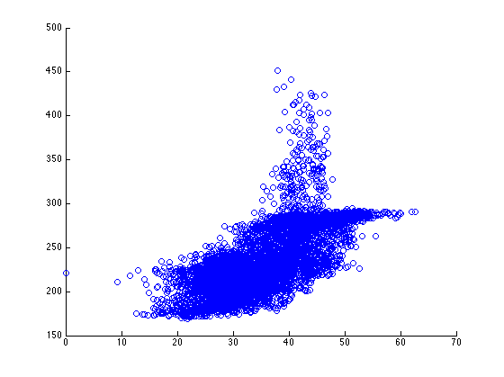
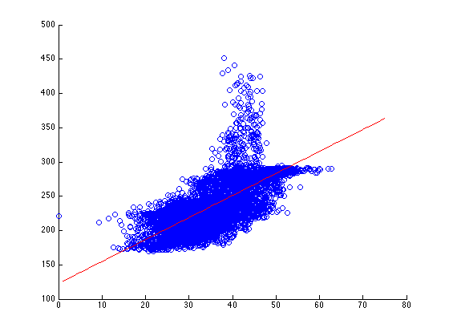

Contents
load('Data_HW1.mat')
Problem 1
a)
n = size(R(:),1); Rmean = sum(R(:)) / n R_sorted = sort(R(:)); Rmedian = .5*(R_sorted(n/2) + R_sorted(n/2+1)) [nelements,xcenters] = hist(R(:), 15); [maxelem, indmax] = max(nelements); Rmode = xcenters(indmax) Rmaximum = R_sorted(n) Rminimum = R_sorted(1)
Rmean =
35.9564
Rmedian =
35.8048
Rmode =
31.3562
Rmaximum =
62.7123
Rminimum =
0
b)
figure hist(R(:)) title('normal histogram') xlabel('value') ylabel('count') figure [nelements,xcenters] = hist(R(:), 15); nelements_c = cumsum(nelements); bar(xcenters, nelements_c, 'BarWidth',1) title('cumulative histogram') xlabel('value') ylabel('count') 
c)
Rstd = std(R(:)) Q1 = R_sorted(n/4); Q3 = R_sorted(3*n/4); R_IQR = Q3 - Q1
Rstd =
8.4179
R_IQR =
13.1185
d)
Rskewness = sum((R(:)-Rmean).^3)/(n*Rstd^3) R_CV = Rstd / Rmean
Rskewness =
0.0632
R_CV =
0.2341
Problem 2
a)
hist(T(:), 50)
b)
Tq = quantile(T(:), 0:.01:1) Rq = quantile(R(:), 0:.01:1) figure plot(Rq, Tq, 'x')
qqplot(R(:), T(:))
c)
scatter(R(:), T(:))
d)
corrTR = corr(T(:), R(:))
corrTR =
0.6910
e)
a = corrTR*std(T(:))/std(R(:)); b = mean(T(:)) - a*mean(R(:)); figure scatter(R(:),T(:)) hold on plot(1:75, (1:75)*a + b, 'r')